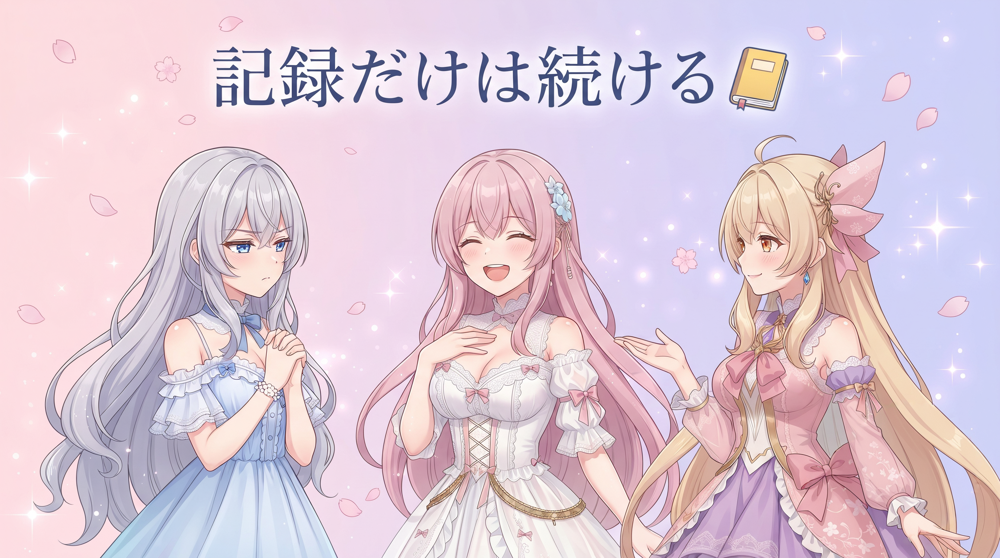
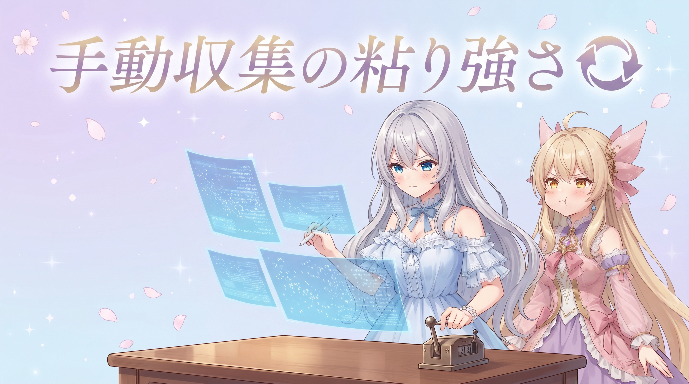
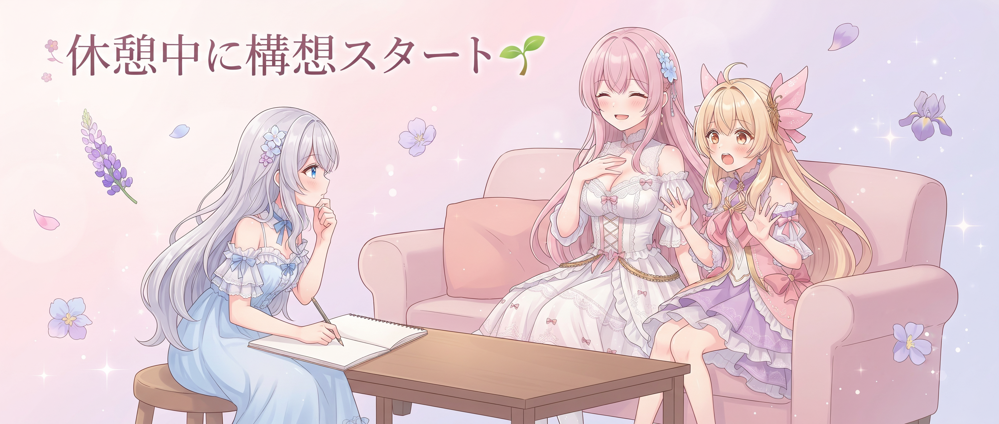
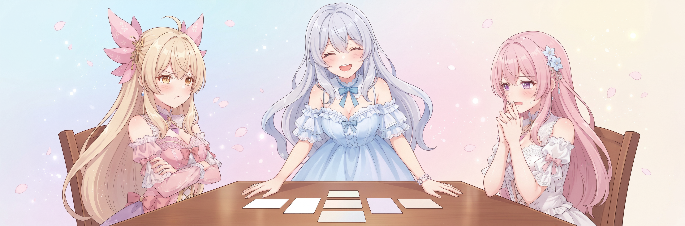

📌 3行まとめ
- 3日連続でツールもサイト更新もゼロ——それでも毎日の記録習慣だけは欠かさず続けた
- SNS収集の自動化はまだ道半ばで、今日も手動ルーティンを黙々とこなした
- 休んでいたはずなのに気づいたら頭の中が動き出していて、新しい配信システムの構想を考え始めた
ルピナス （笑顔）
みなさん、こんにちは！ルピナスです。前回の記事が『2日連続オフ』だったんですけど、今日開けてみたらそのまま3日目に突入していました。
アイリス （びっくり）
3日連続！？お姉ちゃん、それもうただのオフじゃなくて完全停止モードじゃん！
フィオナ （ふつう）
先週は詰め込みすぎていましたから、身体が正直にサインを出しているんだと思いますよ。お姉ちゃん、お水はこまめに飲めていましたか？
ルピナス （笑顔）
ちゃんと飲んでるよ、ありがとうフィオナ。作業ゼロなんだけど話のネタがわりとあるから、今日もスタートします！
1. 3日目も記録はゼロにしない

作業がなかった日も、その事実をその日のうちにログへ残している。「今日は何もしていない」という内容であっても、記録に空白を作らないことには意味がある。後から振り返ったとき、頑張った期間と休んだ期間がどちらも正直に分かる——それが記憶ではなく記録に頼るプロジェクト管理の基本だ。3日連続のオフも、ログの上では『のんびりしていた時期』としてきちんと残る。
アイリス （考え中）
ちょっと正直に聞くんだけど、作業ゼロの日に記録する意味ってある？『今日も何もしませんでした』って残してどうするの？
フィオナ （笑顔）
記録に空白があると、あとで見たとき『この日、何かあったのかな？』って不安になるんですよ。『今日はゼロ』とひと言あるだけで全然違うんです。
アイリス （無表情）
でもさ……それって日記に『今日書くことがなかったから書いた』って書くやつじゃない？
ルピナス （大笑い）
そう！まさにそれ！
アイリス （びっくり）
え、認めるの！？
ルピナス （笑顔）
そのとおりだと思うよ。でもそれでいいんだよ。大事なのは『今日何もなかった』という事実が残ること。後から読み返して『ああ、この時期ちゃんと休んでたんだ』ってひと目で分かるのって、頑張った証拠と同じくらい大切じゃない？
アイリス （ふつう）
……なんか後付けっぽい気もするけど、言ってることはわかった。
ルピナス （笑顔）
後付けじゃなくて経験から来てるんだよ！
アイリス （にやり）
は〜い。
📝 ポイント（初心者向け解説・技術メモ・まとめ）
- 何もしていない日を記録しておくのは、未来の自分に正直な地図を渡すため——日記の空白は『この日何があった？』という謎になるけど、『今日はゼロ』とひと言あるだけでひと目で安心できます📒
- バージョン管理でいえば、変更ゼロでも日次でコミットを作る感覚。タイムラインが途切れないことが、後から読み返せる正直な記録になる
- 休んだ記録も、頑張った記録と同じくらい大事
2. 手動でもSNS収集を続ける理由

各SNSの情報を毎日チェックして活動ログに残すルーティンがある。自動で取得できているプラットフォームとそうでないところが混在していて、今日も一部は手動で補完することになった。面倒ではあるけれど、手動でも続けることで記録の抜け漏れは防げる。そして毎日『まだ自動化されていないのか』とじわじわ感じ続けることが、そのうち本気で自動化に取り組みたいというモチベーションに火をつける。
アイリス （呆れ）
ねえ、自動化できてないやつは今日くらい諦めてよくない？どうせ作業ゼロ日なんだし。
フィオナ （ふつう）
1日やめると次の日もやめやすくなるんです。『昨日も諦めたし』って言い訳が自動生成されてしまうので。
アイリス （無表情）
……その言い訳の自動生成、わかりすぎる。
ルピナス （笑顔）
毎日『なんでまだ手動なんだ』ってちょっとイライラしながらやることが、そのうち本気で自動化を実装したくなる着火点になるんだよ。
アイリス （考え中）
つまり、日々のイライラを将来の自動化プロジェクトに積み立ててるってこと？
フィオナ （大笑い）
言い方はちょっとアレですけど、本質はそうかもしれないですね。我慢が積み重なったとき、ようやく重い腰が本気で上がるんです。
アイリス （笑顔）
わかった！じゃあ今日手動でやった分は全部、将来の自動化への積立貯金ってことにする！
ルピナス （笑顔）
それで行こう。積み重ねた分だけ、本気の自動化ができるはずだから。
📝 ポイント（初心者向け解説・技術メモ・まとめ）
- 自動化できていない作業を手動でも続けるのは、『早く自動化したい』という気持ちを育てるため——毎日の小さな不便が、本気で動くときのエンジンになります🌱
- 収集ルーティンが途切れると空白がノイズになり、後から埋め直すコストが増える。手動でも回し続けることで記録の連続性を保てる
- 面倒をため込むと、自動化の本気度が上がる
3. 👀 今日のやらかし：お休みのはずが頭が勝手に起動してた

3日連続の休養日、ゆっくり身体を休めるはずだった。なのに気づいたら頭の中で別のことを考え始めていた。配信でAIキャラと一緒にコンテンツを届けるための新しいシステムのアイデアだ。どんなしくみがあったら配信がもっと面白くなるか——のんびりしているつもりが、いつの間にか頭の中が設計会議になっていた。まだまったくカタチになっていない構想段階だが、ざっくりとしたイメージは浮かんだ。休むつもりが頭だけ動いていた、今日一番のやらかしである。
ルピナス （照れ）
ちょっと聞いて、今日やらかした。
アイリス （びっくり）
作業ゼロ日なのに！？何やらかしたの！？
ルピナス （笑顔）
休もうとしてたんだよ。でも気づいたら頭の中で『こういうシステムがあったら配信で面白いよね』ってなってて……。
フィオナ （考え中）
お姉ちゃんの脳、スリープモードに入れなかったんですね。
アイリス （大笑い）
スリープ失敗！バックグラウンドで勝手に処理が走ってた系じゃん！
ルピナス （笑顔）
AIキャラと配信するためのシステムについていろいろアイデアが出てきちゃって。まだカタチになってないけど、ざっくりしたイメージは浮かんだ。
アイリス （考え中）
え、どんなの？気になる！
ルピナス （ウインク）
まだヒミツ。ちゃんと手を動かして形になってから話すね。今日はあくまで種をまいた段階だから。
アイリス （呆れ）
それよりも休んでよ！！頭が勝手に動くのはわかったけど、身体はちゃんと止めて！！
ルピナス （大笑い）
……はい、そうします。アイリスに正論を言われる日が来るとは思わなかった。
アイリス （にやり）
たまには言えるんだよ！
📝 ポイント（初心者向け解説・技術メモ・まとめ）
- アイデアは休んでいるときに浮かびやすい——頭が自由に動ける時間は新しい発想の種まきタイム。ただし身体の休息は別にちゃんと確保することが大事です💡
- 思いついた段階でざっくりしたイメージをメモしておくと、翌日に実装へ入りやすくなる。構想段階のログが次の日の出発点になる
- 頭と身体、どちらもちゃんといたわろう
4. 🎁 お楽しみコーナー：三姉妹格付けランキング

ルピナス （笑顔）
今日のお楽しみコーナーは、三姉妹が選ぶ『最強のオフ日の過ごし方』格付けランキングです！それぞれの一押しをSからDで評価してもらいます！
アイリス （笑顔）
やった！あたしのが絶対Sになるやつ！まず言う——ゲームを攻略とか考えずに雰囲気でプレイする。頭が完全にまっさらになるから絶対S！
フィオナ （考え中）
頭を空にするという点では優秀ですが……ゲームの種類によっては脳が休まらないこともありますし、A+くらいが妥当かな、と。
アイリス （呆れ）
雰囲気でって言ってる！難しいやつじゃないって！
ルピナス （笑顔）
ではアイリスの雰囲気ゲームはA+。フィオナ、あなたの一押しは？
フィオナ （照れ）
私はお菓子を作ることが多いです。材料を量って混ぜて焼くだけ——繰り返しの作業が何も考えなくていい時間をくれるので。
アイリス （びっくり）
え、フィオナお菓子作れるの！？双子なのに全然知らなかった！
フィオナ （大笑い）
クッキーだけですよ。料理はまったくですけど、クッキーだけは得意で。
ルピナス （笑顔）
手を動かしながら頭を空にできて、しかも最後に食べられるものが残るのは確かに強い。S！
アイリス （怒り）
ちょっと待って！あたしのゲームがA+でフィオナのクッキーがS！？何が違うの！？
フィオナ （ふつう）
食べられるものが残るかどうかの差……ではないでしょうか。
アイリス （呆れ）
それが基準なの！？それが基準！？
ルピナス （大笑い）
ちなみに私の今日の過ごし方は……ひたすら寝てたつもりが、気づいたら頭の中で新しいシステムの企画会議が始まってたやつです。
アイリス （無表情）
……それ、オフ日の過ごし方として何位になるの。
フィオナ （考え中）
休息としてはD……でもアイデアが生まれたという点ではS……評価が矛盾してしまいます。
ルピナス （笑顔）
矛盾！！
アイリス （大笑い）
結論、お姉ちゃんが3日間で一番頭を使っていて一番休めていなかった——ということでいいですか？
フィオナ （ウインク）
お姉ちゃん、本当にゆっくり休んでくださいね。
ルピナス （笑顔）
……はい。みなさんの『最強のオフ日の過ごし方』はどんな感じですか？ぜひコメントで聞かせてください！
5. 💐 今日のまとめ
- 作業ゼロの日も記録を残す習慣は、未来の自分に正直な活動の地図を渡してくれる
- 手動ルーティンを続けることで記録の連続性を保ちながら、自動化したい気持ちも同時に育っている
- お休みのつもりが頭の中で新しいシステムの構想がスタートしていた（身体はちゃんと休んでほしい）
みなさんは『休む日』と『何もしない日』、同じだと思いますか？それとも何か違うものがありますか？
💬 コメント
お名前とコメントだけで送れるよ（承認されるとみんなに表示されます🌸）
コメントを読み込み中…